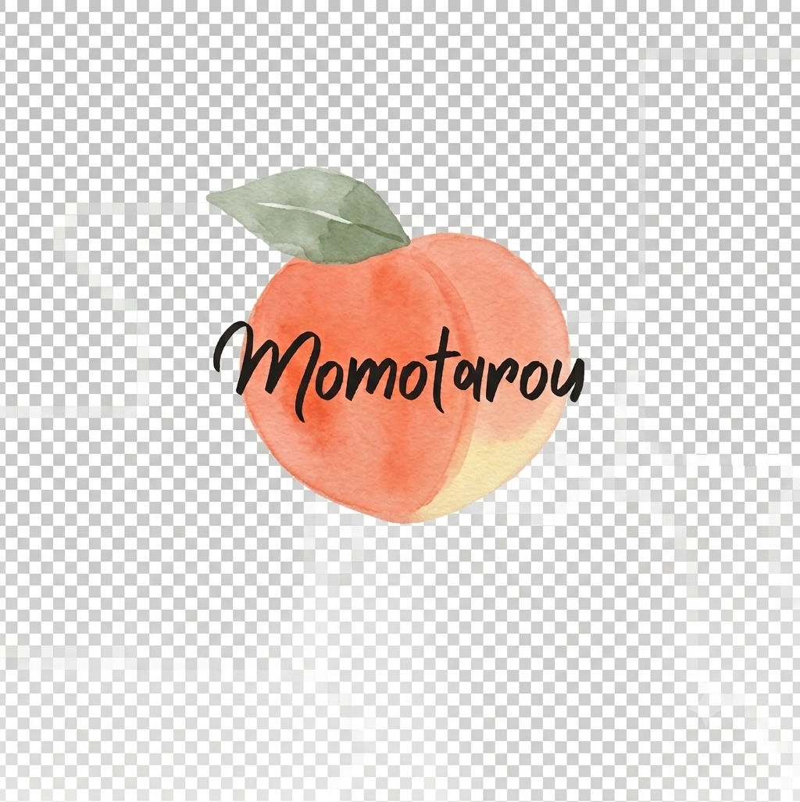
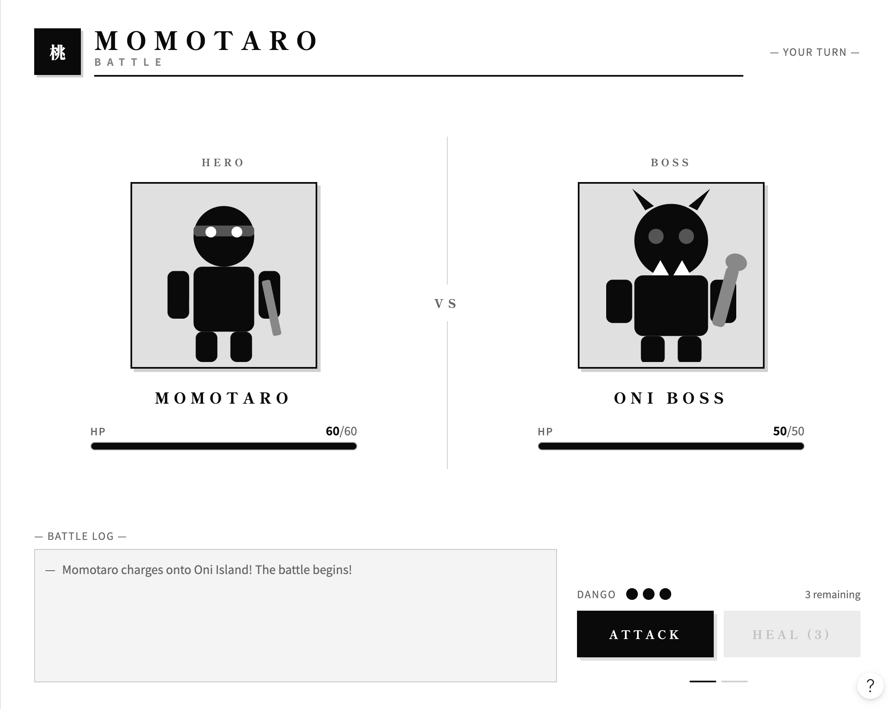
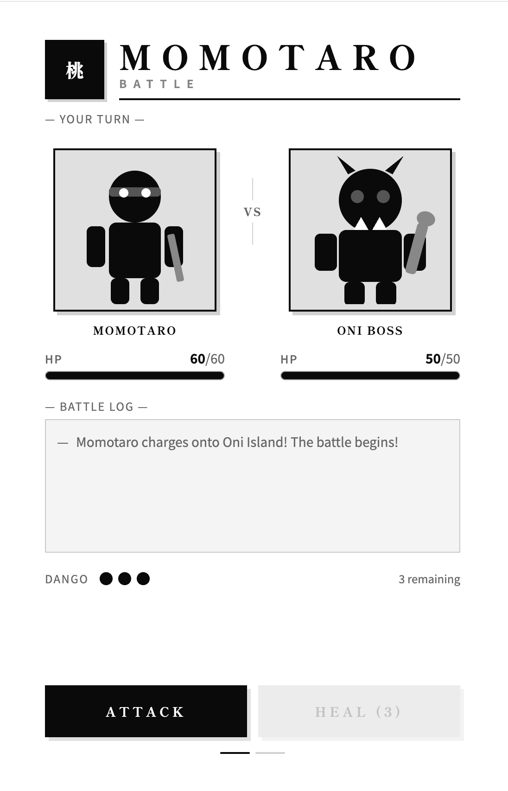

Overview
Purpose
The purpose of this web application is to provide a simple, turn-based battle with monster(Oni) game based on famous Japanese fairytale "Momotarou".
Audience
The audience is mainly children and adults who are familiar with "Momotarou" story.
Dynamic elements
- Event Listeners: With buttons for "Attack" and "Heal", user can choose thier action each time.
- Object & Arrays: Character states(HP, attackpower) will be managed as Objects, and team members will be stored in an Array.
- Array Method (forEach): A forEach loop will be used when the player eats a "Kibi-dango" (healing item) to loop through all party members and display a text log showing that everyone's health is restored.
- Conditional: JavaScript will constantly check game states, such as player or enemy defeat conditions, and will dynamically change the character's image to a "damaged" version depending on their remaining HP.
- DOM: The log section, HP meters, and character images will update immediately on the screen after every action.
Branding
Website Logo

Style Guide
Color Palette
Palette URL: https://coolors.co/396e94-e7c24f-a43312-381d2a-aabd8c| Primary | Secondary | Accent 1 | Accent 2 |
|---|---|---|---|
| [#0E232E] | [#FFF4D7] | [#DC7F8A] | [#6E7F55] |
Pseudocode for your project
1. Create an object for the player team and the enemy (Oni) with properties for name, HP, and available items.
2. Create an array to hold the names of the party members for random selection.
3. Display the initial state of the game, including character images and HP meters using a forEach loop.
4. Add event listeners to the "Attack" and "Heal" buttons.
5. When "Attack" is clicked, randomly select a member from the array to deal damage to the enemy and update its HP.
6. When "Heal" is clicked, restore the team's HP, consume an item, and use forEach to display a log showing that everyone is energized.
7. After each action, the enemy will counterattack if it is still alive.
8. Check the current HP to dynamically change the character's image if their health gets low.
9. Update the log section and repeat the process until either the enemy or the player is defeated.
Wireframes
Create wireframes for your project page(s). One for each page and list them here.

